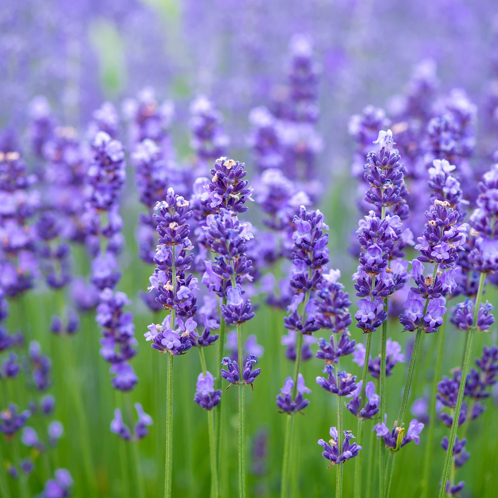

Lavender
Lavender is a fragrant and versatile herb known for its aromatic foliage and beautiful purple flowers. Here's a comprehensive guide on lavender, including its types, planting procedure, and care:
Types of Lavenders:
- English Lavender: This type of lavender is known for its intense fragrance and compact growth habit. Varieties include 'Hidcote' and 'Munstead.'
- French Lavender : French lavender has serrated leaves and distinctive flower heads with tufts of colorful bracts on top. Varieties include 'Goodwin Creek Grey' and 'Lavender dentata.'
- Spanish Lavender : Spanish lavender features showy flower heads with large bracts resembling rabbit ears. Varieties include 'Otto Quast' and 'Silver Anouk.'
- Planting Procedure:
- Spring or Fall: Lavender can be planted in spring after the danger of frost has passed or in fall before the first frost.
- Sunlight: Lavender thrives in full sun, requiring at least 6 to 8 hours of direct sunlight per day.
- Soil: Plant lavender in well-drained soil with a pH level between 6.5 and 7.5. Avoid heavy or clay soils that retain water, as they can cause root rot.
Weather in Kathmandu
Temperature: °C
Humidity: %
Condition:
Date & Time: